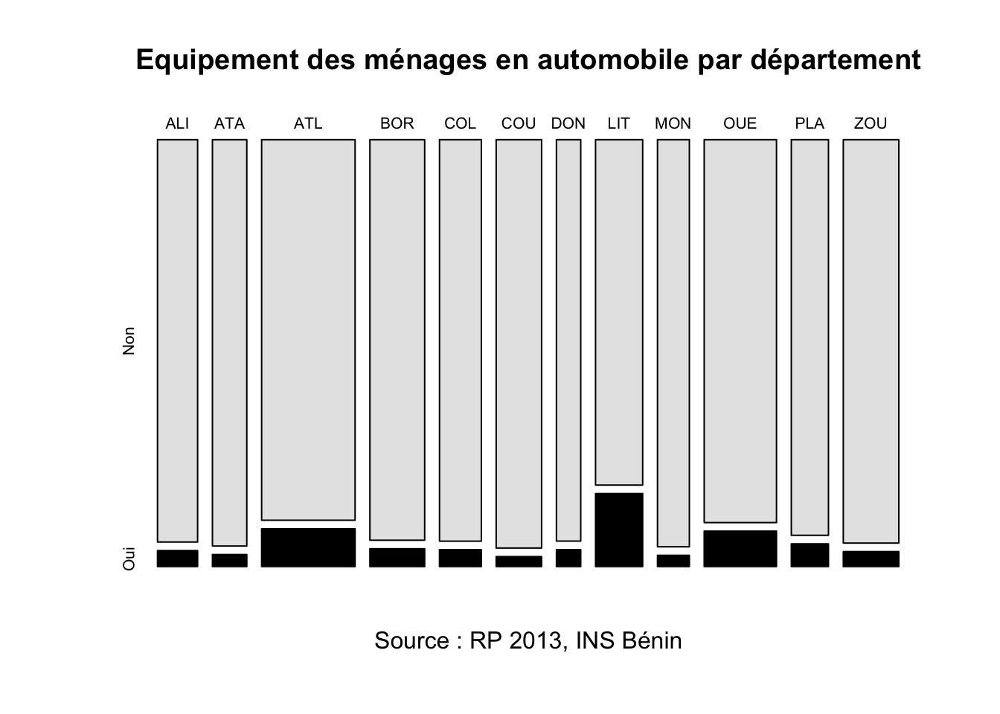
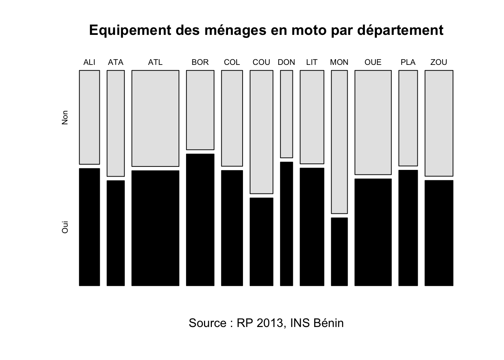
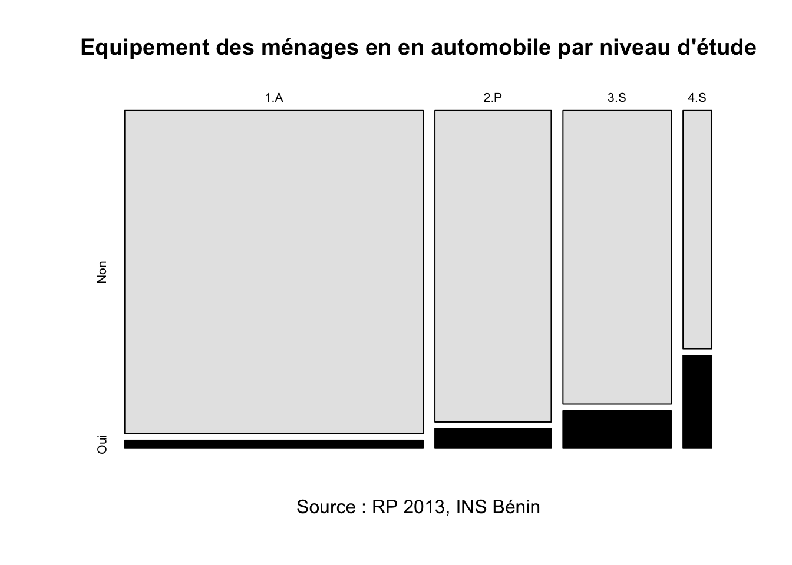
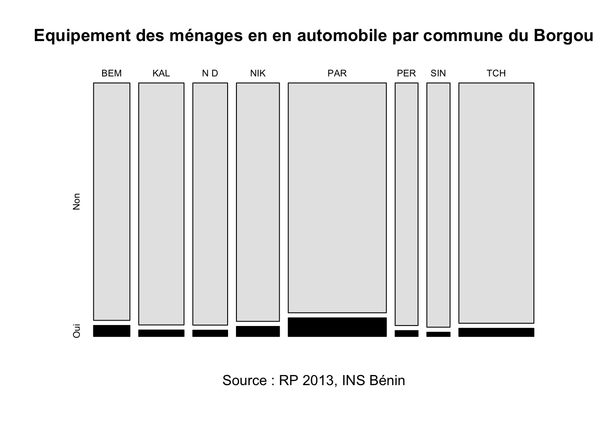
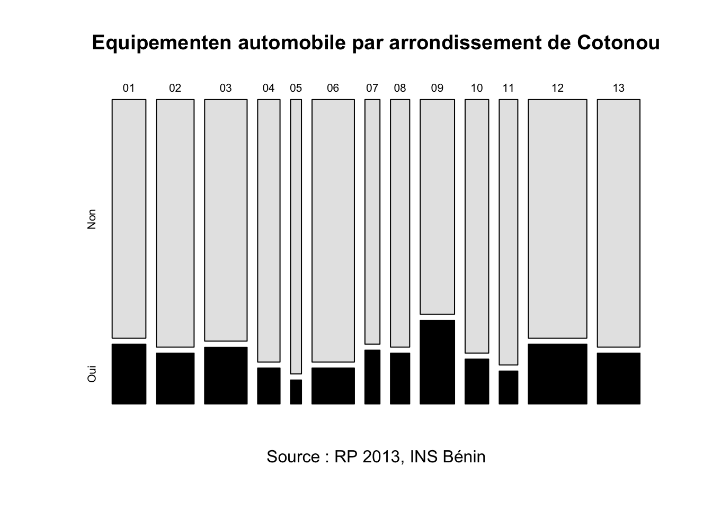
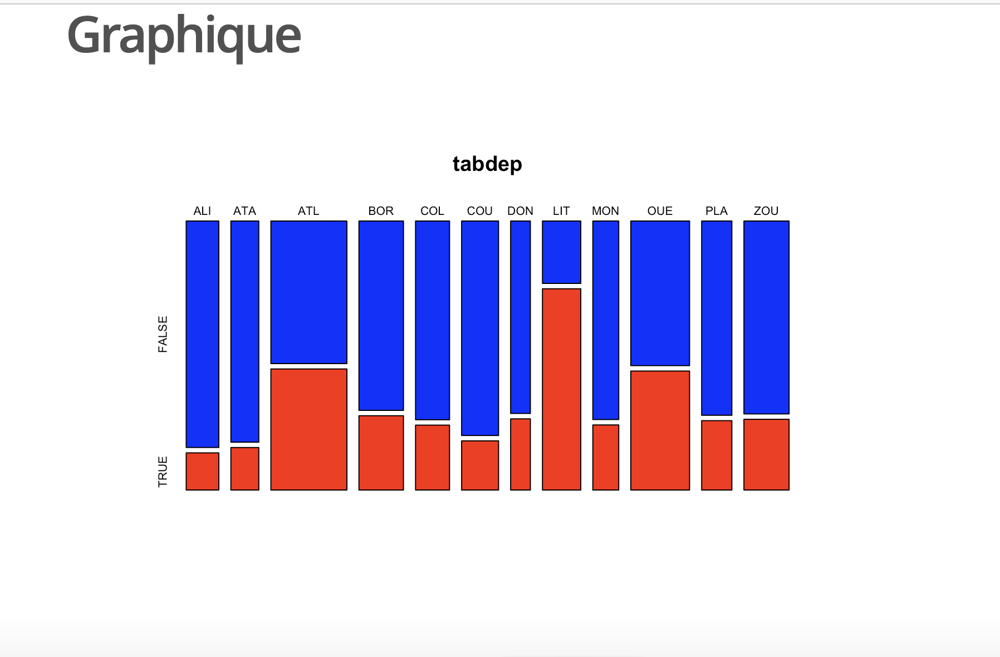
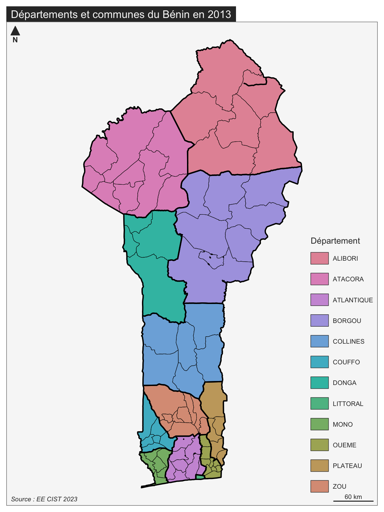
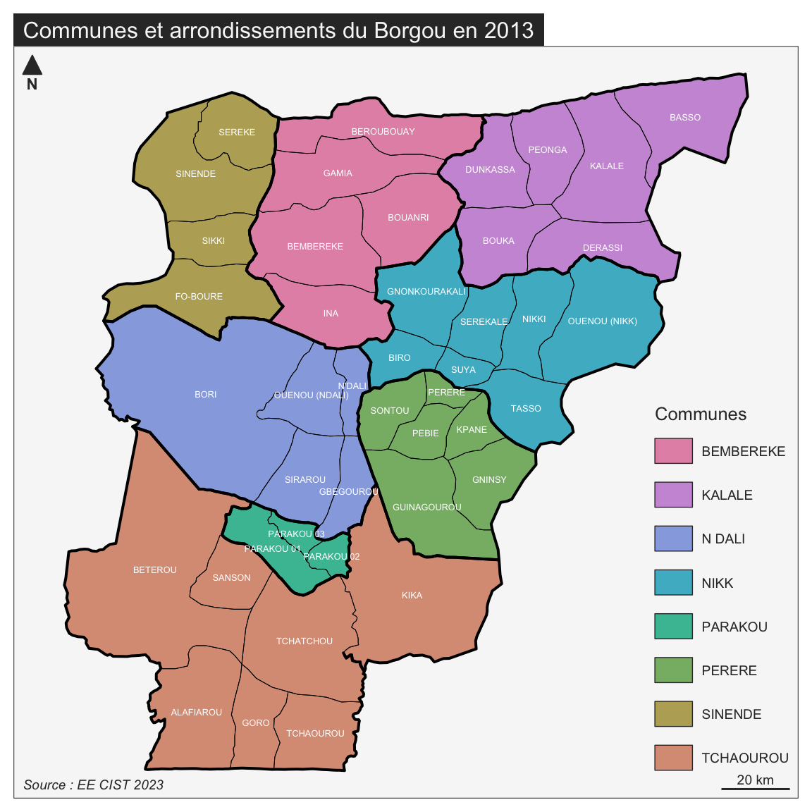
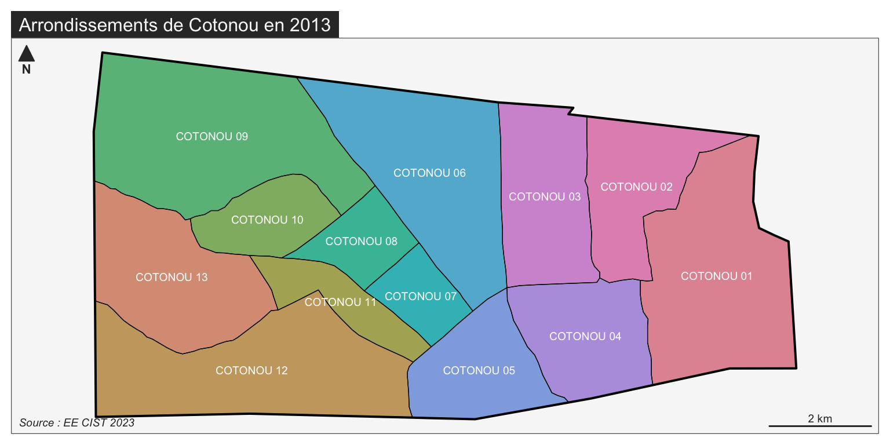

2 Office Killer
- Mise en place : Télécharger le dossier exo2 et décompressez le sur votre ordinateur. Puis ouvrez le projet R
exo2.Rprojdans Rstudio.
Le but de ce chapitre est de montrer le plus tôt possible aux étudiants les possibilités de R et de son environnement R-Studio en ce qui concerne la production de documents ou de présentations dans le cadre d’une démarche reproductible. L’apprentissage précoce de Rmarkdown nous semble en effet indispensable, ne serait-ce que pour que les étudiants apprennent à prendre en cours des notes mélangeant les exemples de code R et les explications données en cours ou en TD.
Mais le but véritable est de convaincre tout ou partie des étudiants qu’ils peuvent remplacer à terme les logiciels de bureautique des suites office par un environnement de travail plus intégré et plus performant… à condition d’oublier la souris pour revenir au clavier !
Real mensch never clcik !
2.1 Rstudio
- Au commencement, les dieux de la statistique créèrent le langage R.
- Mais l’interface était vide et vague,
- les ténèbres couvraient les lignes de code
- R-Studio dit : Que le projet soit et le projet fut.
Si l’on veut s’épargner bien des désagréments dans l’apprentissage de R, il faut prendre dès le départ de bonnes habitudes. Parmi celles-ci, l’une des plus importantes est le fait d’inscrire toujours son travail dans le cadre d’un projet R c’est-à-dire - en simplifiant beaucoup - un répertoire de travail contenant l’ensemble des données, programmes, résultats… que l’on pourra par la suite compresser, archiver et transmettre à quelqu’un d’autre.
2.1.1 Lancement de R studio
Sauf à être complètement masochiste, on n’utilise jamais R directement mais on lance d’abord l’interface R-Studio qui facilite conisdérablement l’ensemble des opérations et offre une gamme considérable de services. Il ne faut toutefois pas confondre les deux et il serait par exemple ridicule d’indiquer sur un CV en vue d’un emploi de statisticien que l’on sait utiliser R-studio en oubliant de préciser que l’on maîtrise R.
2.1.2 Création d’un projet
Pour créer un projet on utilise le menus déroulant File/new project/ … et on définit un dossier de notre ordinateur (existant ou à créer) qui contiendra le projet. Une fois l’opération effectuée, on pourra constater que ce dossier contient un fichier xxx.Rproj ou xxx est en principe le nom du dossier dans lequel vous avez stocké le projet.
Ce fichier contient toute une série d’informations dont nous ne parlerons pas dans ce cours d’initiation mais qui, pour faire simple, définissent un ensemble de réglages du logiciel et de préférences de l’utilisateur.
Si vous fermez Rstudio (faites-le !) il vous suffira pour reprendre votre travail là où vous vous étiez arrêté :
- de lancer R-studio et de cliquer sur File/open project/… suivi du nom du fichier xxx.Rproj
- ou plus simplement encore de double cliquer sur le fichier xxx.Rproj ce qui lancera automatiquement Rstudio
Le dossier contenant votre projet R peut être organisé à votre convenance. Certains mettent tout les fichier pêle-mêle dans le dossier. D’autres préfèrent créer des sous-dossiers contenant des données, des programmes, des résultats, des figures. Vous déciderez à l’usage de ce qui vous convient le mieux, mais le point important est que tout ce qui entre ou sort de vos programmes R doit être de préférence stocké dans le répertoire du projet.
2.2 Excel killer
- C’est pourquoi tu quittera Word et Excel, et t’attachera à R studio,
- et vous deviendrez une seule chair.
La fonction initiale d’un langage de programmation comme R est … de créer des programmes c’est-à-dire des ensembles d’instruction permettant d’accomplir une tâche à l’intérieur d’une chaîne de production. Dans le cas d’un logiciel spécialisé dans l’analyse statistique, il s’agira donc de partir de données (statistiques, géographiques, textuelles, …) pour aboutir à des résultats prenant la forme de tableaux, cartes ou graphiques. Il ne s’agit donc en somme que d’une étape du travail de recherche où le principal avantage de R est d’automatiser une tâche et de faciliter sa reproduction ultérieure avec en arrière plan un objectif de productivité puisque l’ordinateur réalise en quelques millisecondes des tâches qui prendraient des heures avec un logiciel click-bouton de type Excel.
Prenons un exemple simple de problème facile à résoudre avec R mais plus compliqué avec des logiciels click-boutons. Il s’agit d’un exemple pédagogique tiré d’un très vieux cours d’analyse spatiale portant sur les semis de point et les localisations optimales.
On considère une carte papier permettant de localiser 5 station services à l’intérieur d’une ville à plan en damier. Chaque station livre chacune la même quantité de carburant par semaine aux clients. On souhaite répondre aux questions suivantes :
- Comment saisir les données dans une fichier numérique ?
- Comment reproduire la carte papier sous forme d’un graphique ?
- Comment calculer la dsitance à vol d’oiseau entre toutes les stations ?
- Comment calculer la dsitance routière entre toutes les stations ?
- Où localiser un dépôt de carburant permettant d’alimenter les cinq stations en minimisant la distance moyenne de livraison (critère d’efficacite)
- Où localiser une caserne de pompier qui doit pouvoir intervenir rapidement sur toute les stations et qui doit minimiser la distance maximale à la station la plus éloignée (critère d’équité).
- Comment visualiser ces deux localisations sur la carte des stations ?
- Comment reproduire ces tâches rapidement s’il y a des ajouts ou suppressions de stations
On constitue deux équipes d’étudiants, certains utilisant un programme R et d’autres Excel. On se propose de voir qui ira le plus vite sur chacune des 8 tâches proposées.
2.2.1 Round 1. Saisie des données et affichage du tableau
On crée un programme R avec File/New File/R Script puis on l’enregistre avec File/Save/ … suivi du nom du programme.
# Saisie des variables
CODE <- c("A","B","C","D","E")
X <- c(10,20,40,50,180)
Y <- c(40,60,40,60,50)
# Regroupement dans un tableau
coo <- data.frame(X,Y)
# Ajout du nom des lignes
row.names(coo) <- CODE
# Affichage du tableau
coo
#> X Y
#> A 10 40
#> B 20 60
#> C 40 40
#> D 50 60
#> E 180 50Normalement, les étudiants qui utilisent un tableur ont du aller plus vite et Excel mène sur R par 1-0
2.2.2 Round 2. Affichage de la carte
Vous devez essayez de reproduire l’image correspondant au problème posé
plot(X,Y,
col="red",
pch=20,
xlim=c(0,180),
ylim=c(0,90),
asp = 1)
text(X,Y,
labels = CODE,
pos = 2)La création d’un graphique est à première vue plus facile avec un logiciel click-bouton. L’avantage est très clairement pour Excel qui mène désormais 2 à 0.
2.2.3 Round 3. Calcul de la station la plus accessible à vol d’oiseau (distance euclidienne)
Vous devez calculer une matrice de distance euclidienne entre toutes les stations et trouver la plus accessible.
# calcul la matrice de distance euclidienne
mat<-dist(coo, upper = T, method = "euclidean")
mat
#> A B C D E
#> A 22.36068 30.00000 44.72136 170.29386
#> B 22.36068 28.28427 30.00000 160.31220
#> C 30.00000 28.28427 22.36068 140.35669
#> D 44.72136 30.00000 22.36068 130.38405
#> E 170.29386 160.31220 140.35669 130.38405
# distance moyenne
apply(as.matrix(mat),1,mean)
#> A B C D E
#> 53.47518 48.19143 44.20033 45.49322 120.26936Là, je parie que les utilisateurs d’Excel ont eu un peu plus de mal … En tous les cas, Excel ne mèneplus que par 2 à 1
2.2.4 Round 4. Calcul de la station la plus accessible par la route (distance de Manhattan)
Vous devez calculer une matrice de distance de Manhattan entre toutes les stations et trouver la plus accessible.
# calcul la matrice de distance de Manhattan
mat<-dist(coo,upper = T, method = "manhattan")
mat
#> A B C D E
#> A 30 30 60 180
#> B 30 40 30 170
#> C 30 40 30 150
#> D 60 30 30 140
#> E 180 170 150 140
# distance moyenne de Manhattan
apply(as.matrix(mat),1,mean)
#> A B C D E
#> 60 54 50 52 128Je reconnais que c’est unpeu facile, mais à nouveau R l’emporte ce qui fait désormais match nul 2-2
2.2.5 Round 5. Localisation du dépôt de carburant
Dans le cas particulier de la distance de Manhattan, le calcul du point le plus proche de tous les autres s’obtient facilement en calculant le point médian dont les coordonnées correspondent à la médiane de X et la médiane de Y.
medX <- median(X)
medX
#> [1] 40
medY <- median(Y)
medY
#> [1] 50A priori, le calcul est aussi facile dans R et dans Excel : match nul 3-3
2.2.6 Round 6. Localisation de la caserne de pompiers
Dans le cas particulier de la distance de Manhattan, le calcul du point minimisant la distance maximale s’obtient en trouvant le centre du diamètre minimal en X et en Y. Il s’agit de la localisation la plus équitable où le plus défavorisé est le moins défavorisé possible.
equX <- (max(X)+min(X))/2
equX
#> [1] 95
equY <- (max(Y)+min(Y))/2
equY
#> [1] 50A priori, le calcul est toujours aussi facile dans R et dans Excel : match nul 4-4
2.2.7 Round 7. Visualisation des deux points sur la carte
On va placer en bleu le point médian et en vert le point le plus équitable. Dans le cas de R on peut recopier les lignes de code du graphique du round n°2 ce qui gagne désormais du temps :
# Programme antérieur
plot(X,Y,
col="red",
pch=20,
xlim=c(0,180),
ylim=c(0,90),
asp = 1)
text(X,Y,
labels = CODE,
pos = 2)
# Ajout du dépôt de carburant
points(medX, medY, col="blue", pch=3)
text(medX,medY, "dépot",pos=1)
# Ajout du point médian
points(equX, equY, col="green", pch=3)
text(equX,equY, "caserne",pos=1)Le résultat du match est incertain mais R n’est plus désavantagé puisqu’on peut recycler les lignes de code précédentes pour le graphique de base. Disons 5-5 même s’il y a de fortes chances que R l’emporte.
2.2.8 Dernier round. Refaire toute l’analyse avec une station de plus
Deux stations F(100,20) et G(150,30) ont été ajoutées. Il faut refaire la carte finale. Cela ne pose aucun problème dans R puisqu’il suffit de modifier l’entrée des données et récupérer des bouts de programme
# (1) Saisie des variables
CODE <- c("A","B","C","D","E","F","G")
X <- c(10,20,40,50,180,100,150)
Y <- c(40,60,40,60,50,20,30)
coo <- data.frame(X,Y)
row.names(coo) <- CODE
# (2) calcul des points centraux
medX <- median(X)
medY <- median(Y)
equX <- (max(X)+min(X))/2
equY <- (max(Y)+min(Y))/2
# (3) Graphique
plot(X,Y,
col="red",
pch=20,
xlim=c(0,180),
ylim=c(0,90),
asp = 1)
text(X,Y,
labels = CODE,
pos = 2)
# Ajout du dépôt de carburant
points(medX, medY, col="blue", pch=3)
text(medX,medY, "Dépôt",pos=1)
# Ajout du point médian
points(equX, equY, col="green", pch=3)
text(equX,equY, "Caserne",pos=1)Excel n’a aucune chance d’aller plus vite et R remporte le match par KO !
2.3 Word killer
- R-Studio dit : « Faisons une interface de rédaction adaptée à notre travail,
- Que l’utilisateur puissent y insérer les tableaux, les graphiques, les cartes, les références bibliographiques, et tous les écrits qui les commentent. »
Nous venons de voir comment une bonne pratique de R peut conduire progressivement à abandonner l’usage des tableurs (Excel, Open Office) sauf peut-être pour l’étape de saisie des données. Dès lors qu’il s’agit de réaliser des graphiques ou des calculs statistiques complexes, la rédaction d’un programme se révèle beaucoup plus intéressante même si elle impose un coût initial d’apprentissage.
Mais une bonne pratique de R ou plus précisément des documents R markdown peut vous conduire beaucoup plus loin et vous amener à abandonner également votre logiciel de traitement de texte (Word) et votre outil de présentation (Power Point). Le coût d’apprentissage est naturellement un peu plus élevé mais les bénéfices sont à la mesure de l’investissement.
Comme le montre la figure ci-dessous, un document R markdown est en quelques sorte un mélange entre des lignes de code R qui executent des tâches et des lignes de texte où sont expliqués les calculs et commentés les résultats obtenus. En d’autres termes, un document R markdown vous permet de rédiger un article de recherche complet, une présentation à une conférence, un syllabus de cours, dans un seul environnement logiciel (R studio).
Nul besoin de ciseau et de colle pour aller chercher tel tableau ici, tel figure là-bas ou telle carte ailleurs. Tous ces éléments sont intégrs au fur et à mesure de la rédaction ce qui facilite considérablement la concentration. Et surtout - on l’a déjà vu pour le programme R - le document peut facilement être reproduit ou mise à jour sans être obligé de réplique des dizaines de click de souris.

Nous allons illustrer l’usage de R markdown en prenant l’exemple de l’exploitation du recensement général de population de 2013 au Bénin.
Le jeu de données est un échantillon de variables relatives aux ménages du Bénin lors du RP 2013. Il s’agit plus précisément d’une extraction par tirage au sort de 100 ménages dans chacun des 546 arrondissements du Bénin. Le tirage au sort a été effectué en se limitant aux ménages composés d’au moins deux personnes, dont le chef de ménage est marié ou en union libre et dont les variables chosies ne comportent pas de valeurs manquantes ou non renseignés. La base de sondage se compose donc d’1.305 millions de ménages sur les 2 millions que compte le Bénin à cette date. L’échantillon comporte exactement 54600 lignes (100 pour chacun des 546 arrondissements).
Les variables ont été anonymisées en supprimant le numéro d’identification des ménages du recensement et en le remplaçant par le code de l’arrondissement suivi d’un chiffre de 001 à 100. Les variables les plus discriminantes ont vu leur nombre de modalité réduit.
2.3.1 Importation
On importe les données depuis excel à l’aide de la fonction read_xlsx() du package readxl. Chaque feuille du tableur Excel devient un data.frame différent.
library(readxl)
don<-read_xlsx("resources/data/BEN-MEN-2013/BEN-MEN-2013-SAMPLE.xlsx",sheet = "data")
meta<-read_xlsx("resources/data/BEN-MEN-2013/BEN-MEN-2013-SAMPLE.xlsx",sheet = "meta")
#> New names:
#> • `` -> `...2`Le tableau comporte 47 variables
STRATES
- ID : identifiant anonyme du ménage
- WGT : poids du ménage
POSITION GEOGRAPHIQUE - DEP : code du département
- DEP_NAME : nom du département
- COM : code de la commune
- COM_NAME : nom de la commune
- ARR : code de l’arrondissement
- ARR_NAME : nom de l’arrondissement
- URBA : statut de l’arrondissement (0 = rural, 1 = urbain)
- DEP_CHEF : arrondissement situé au chef-lieu du département (0 = non, 1 = oui)
- COM_CHEF : arrondissement situé au chef-lieu de la commune (0 = non, 1 = oui)
- COM_CHEF_DIST : distance de l’arrondissement au chef-lieu de sa commune (en km)
- DEP_CHEF_DIST : distance de l’arrondissement au chef-lieu de son département (en km)
- NAT_CHEF_DIST : distance de l’arrondissement à l’aéroport de Cotonu (en km)
STRUCTURE DU MENAGE
- statoc : statut d’occupation (Propriété individuelle ou familiale, locataire, autre)
- tailmen : nombre de personnes recensées dans le ménage
ATTRIBUTS DU CHEF DE MENAGE
- locnais : code de la commune de naissance (ou du département ou du pays étranger)
- datnais : année de naissance
- age : âge en différence de millésime
- sexe : sexe
- etud5 : niveau d’étude maximal (ramené à 5 modalités)
EQUIPEMENT DU MENAGE (présence ou absence)
- radio : poste de radio
- telev : poste de télévision
- hifi : chaîne HIFI
- parab : parabole
- magne : magnetoscope
- cddvd : lecteur de CD-DVD
- frigo : réfrigérateur
- cuisi : cuisinière
- foyam : foyer aménagé
- ferre : fer à repasser
- clima : climatiseur
- venti : betilateur
- lit : lit
- matel : matelas
- faumo : fauteuril moderne
- ordi : ordinateur
- inter : accès internet
- elgen : générateur électrique
- bicyc : bicyclette
- motoc : motcyclette
- voitu : coiture
- barqu : barque, pirogue
- telfix: téléphone fixe (au moins une ligne)
- telmob: téléphone mobile (au moins un abonnement)
SYNTHESE DES EQUIPEMENTS
- equip_tot : nombre total d’équipements différents (0 à 24)
- equip_acp : coordonnées sur le 1er axe factoriel d’une ACP sur les 24 équipements.
Nous affichons à titre d’exemple les 5 premières lignes du tableau
head(don)
#> # A tibble: 6 × 47
#> ID WGT DEP DEP_NAME COM COM_NAME ARR ARR_NAME URBA DEP_CHEF
#> <chr> <dbl> <chr> <chr> <chr> <chr> <chr> <chr> <dbl> <dbl>
#> 1 01101_001 37.6 01 ALIBORI 011 BANIKOARA 01101 FOUNOUNGO 0 0
#> 2 01101_002 37.6 01 ALIBORI 011 BANIKOARA 01101 FOUNOUNGO 0 0
#> 3 01101_003 37.6 01 ALIBORI 011 BANIKOARA 01101 FOUNOUNGO 0 0
#> 4 01101_004 37.6 01 ALIBORI 011 BANIKOARA 01101 FOUNOUNGO 0 0
#> 5 01101_005 37.6 01 ALIBORI 011 BANIKOARA 01101 FOUNOUNGO 0 0
#> 6 01101_006 37.6 01 ALIBORI 011 BANIKOARA 01101 FOUNOUNGO 0 0
#> # ℹ 37 more variables: COM_CHEF <dbl>, COM_CHEF_DIST <dbl>,
#> # DEP_CHEF_DIST <dbl>, NAT_CHEF_DIST <dbl>, statoc <chr>, tailmen <dbl>,
#> # locnais <chr>, datnais <dbl>, age <dbl>, sexe <chr>, etud5 <chr>,
#> # radio <lgl>, telev <lgl>, hifi <lgl>, parab <lgl>, magne <lgl>,
#> # cddvd <lgl>, frigo <lgl>, cuisi <lgl>, foyam <lgl>, ferre <lgl>,
#> # clima <lgl>, venti <lgl>, lit <lgl>, matel <lgl>, faumo <lgl>, ordi <lgl>,
#> # inter <lgl>, elgen <lgl>, bicyc <lgl>, motoc <lgl>, voitu <lgl>, …2.3.2 Objectif : Rapport sur l’équipement des ménages
Nous devons construire un rapport national comportant des tableaux, des graphiques et des cartes par département pour différents indicateurs d’équipement des ménages afin d’évaluer les inégalités. Le premier équipement retenu est la présence ou l’absence d’une automobile dans le ménage.
On commence par estimer le nombre de ménages équipés au niveau de l’ensemble du pays et par département. Nous devons pour cela construire l’équivalent d’un tableau croisée dynamique dans Excel qui aurait cette forme là :
knitr::include_graphics("resources/figures/excel001.png")
On note qu’il faudra bien pondérer les calculs par le poids des individus de l’échantillon car tous les districts n’ont pas le même nombre de ménages.
Nous allons charger le package questionr qui est particulièrement adapté à cette tâche puisqu’il permet de créer des tableaux pondérés avec la fonction wtd.table()
Le programme suivant réalise exactement la même opération que celle du tableau dynamique d’Excel, puis il affiche le résultat sous la forme d’un tableau dans le document .Rmd
library(questionr)
tab<-wtd.table(x<-don$DEP_NAME,
y<-don$voitu,
weights = don$WGT,
digits = )
kable(addmargins(tab),
digits=0,
col.names = c("Non","Oui","Total"),
caption =c("Nombre de ménages équipés en automobiles par département"))| Non | Oui | Total | |
|---|---|---|---|
| ALIBORI | 87072 | 3455 | 90528 |
| ATACORA | 75348 | 2222 | 77570 |
| ATLANTIQUE | 191910 | 19045 | 210955 |
| BORGOU | 118362 | 5252 | 123614 |
| COLLINES | 90658 | 3800 | 94458 |
| COUFFO | 100125 | 2439 | 102564 |
| DONGA | 52616 | 2216 | 54832 |
| LITTORAL | 87806 | 18540 | 106346 |
| MONO | 70025 | 1929 | 71954 |
| OUEME | 149359 | 13812 | 163171 |
| PLATEAU | 79323 | 4550 | 83873 |
| ZOU | 120851 | 4472 | 125323 |
| Sum | 1223456 | 81732 | 1305188 |
On décide ensuite de calculer les pourcentages en ligne afin de connaître la part des ménages équipés d’automobile dans l’ensemble du pays ainsi que dans chaque département.
La conversion en pct se fait en une seule ligne avec la fonction lprop() - abréviation de line proportion - du package questionr. On affiche ensuite le nouveau tableau dans le document .Rmd avec un titre différent.
tabpct <- lprop(tab)
kable(tabpct,
col.names = c("Non","Oui","Total"),
digits=1,
caption =c("% de ménages équipés en automobiles par département"))| Non | Oui | Total | |
|---|---|---|---|
| ALIBORI | 96.2 | 3.8 | 100 |
| ATACORA | 97.1 | 2.9 | 100 |
| ATLANTIQUE | 91.0 | 9.0 | 100 |
| BORGOU | 95.8 | 4.2 | 100 |
| COLLINES | 96.0 | 4.0 | 100 |
| COUFFO | 97.6 | 2.4 | 100 |
| DONGA | 96.0 | 4.0 | 100 |
| LITTORAL | 82.6 | 17.4 | 100 |
| MONO | 97.3 | 2.7 | 100 |
| OUEME | 91.5 | 8.5 | 100 |
| PLATEAU | 94.6 | 5.4 | 100 |
| ZOU | 96.4 | 3.6 | 100 |
| All | 93.7 | 6.3 | 100 |
On peut facilement ajouter un petit commentaire, comme on le ferait dans Word. Par exemple :
- Commentaire : Dans l’ensemble du Bénin, le taux d’équipement des ménages en automobile est environ de 6.3% en 2013. Cette faible proportion dissimule toutefois de fortes variations d’un département à l’autre. Dans le département du Littoral qui correspond à la métropole de Cotonou, le taux d’équipement est de 17.4%. Dans le département de Couffo qui est une zone très rurale peu développée, le taux d’équipement automobile des ménages n’est que de 2.4%. Cela fait presque un rapport de 1 à 7 !
Pour assurer une visualisation qui combine des informations issues des deux tableaux précédents, on peut utiliser la fonction générique plot() en l’appliquant au tableau de contingence. On raccourcit juste le nom des départements pour un meilleur affichage avec la fonction substr() :
rownames(tab)<-substr(rownames(tab),1,3)
colnames(tab)<-c("Non","Oui")
plot(tab,
col=c("gray90","black"),
main="Equipement des ménages en automobile par département",
sub = "Source : RP 2013, INS Bénin"
)
Cette figure est intéressante car elle permet de visualiser simultanément le poids démographique des départements (largeur des barres à la base) et la proportion de ménages disposant d’une automobile (hauteur de la barre noire). Il n’est pas possible de la produire avec Excel qui aurait besoin de deux graphiques pour exprimer à la fois le poids des départements et leur taux d’équipement.
2.3.3 Variation 1 : équipement des ménages en moto par département
Maintenant que nous disposons d’un progamme, nous allons effectuer des variations en changeant un ou plusieurs critères. Par exemple, nous allons prendre comme équipement la présence d’une moto ou mobylette plutôt que d’une voiture. Nous reprenons les programmes précédents en changeant juste le nom de la variable d’équipement et le titre des tableaux ou figures
tab<-wtd.table(x<-don$DEP_NAME,
y<-don$motoc,
weights = don$WGT)
kable(addmargins(tab),
digits=0,
col.names = c("Non","Oui","Total"),
caption =c("Nombre de ménages équipés en moto par département"))| Non | Oui | Total | |
|---|---|---|---|
| ALIBORI | 40272 | 50256 | 90528 |
| ATACORA | 38980 | 38590 | 77570 |
| ATLANTIQUE | 96047 | 114908 | 210955 |
| BORGOU | 46490 | 77124 | 123614 |
| COLLINES | 42907 | 51551 | 94458 |
| COUFFO | 59943 | 42621 | 102564 |
| DONGA | 22719 | 32113 | 54832 |
| LITTORAL | 47100 | 59246 | 106346 |
| MONO | 48843 | 23111 | 71954 |
| OUEME | 80628 | 82543 | 163171 |
| PLATEAU | 37995 | 45878 | 83873 |
| ZOU | 62849 | 62474 | 125323 |
| Sum | 624774 | 680414 | 1305188 |
tabpct <- lprop(tab)
kable(tabpct,
col.names = c("Non","Oui","Total"),
digits=1,
caption =c("% de ménages équipés en moto par département"))| Non | Oui | Total | |
|---|---|---|---|
| ALIBORI | 44.5 | 55.5 | 100 |
| ATACORA | 50.3 | 49.7 | 100 |
| ATLANTIQUE | 45.5 | 54.5 | 100 |
| BORGOU | 37.6 | 62.4 | 100 |
| COLLINES | 45.4 | 54.6 | 100 |
| COUFFO | 58.4 | 41.6 | 100 |
| DONGA | 41.4 | 58.6 | 100 |
| LITTORAL | 44.3 | 55.7 | 100 |
| MONO | 67.9 | 32.1 | 100 |
| OUEME | 49.4 | 50.6 | 100 |
| PLATEAU | 45.3 | 54.7 | 100 |
| ZOU | 50.1 | 49.9 | 100 |
| All | 47.9 | 52.1 | 100 |
rownames(tab)<-substr(rownames(tab),1,3)
colnames(tab)<-c("Non","Oui")
plot(tab,
col=c("gray90","black"),
main="Equipement des ménages en moto par département",
sub = "Source : RP 2013, INS Bénin"
)
Il ne nous a fallu que quelques secondes pour changer le programme précédent et afficher les deux tableaux et le graphique dans notre rapport. On peut donc se consacrer essentiellement à un nouveau commentaire des résultats :
- Commentaire : Un peu plus de la moitié (52.1%) des ménages du Bénin possède une moto ou une motocyclette en 2013. La répartition est ici beaucoup plus égalitaire que pour les automobile puisque le taux le plus faible est de 32.1% (Mono) et le taux le plus fort de 58.6% (Donga) ce qui n’est même pas le double.
2.3.4 Variation 2 : équipement des ménages en automobile par niveau de diplôme
Nous revenons à l’automobile mais au lieu de faire un calcul par département on va examiner l’effet du niveau de diplôme du chef de ménage. Nous allons ainsi pouvoir examiner les variations sociales du taux d’équipement en faisant l’hypothèse que le diplôme du chef de ménage est - en première approximation - une mesure indirecte du niveau social du ménage.
On doit à peine modifier le programme R précédent pour construire les tableaux et figures habituels.
tab<-wtd.table(x<-don$etud5,
y<-don$voitu,
weights = don$WGT,
digits = )
kable(addmargins(tab),
digits=0,
col.names = c("Non","Oui","Total"),
caption =c("Nombre de ménages équipés en automobile par niveau d'étude"))| Non | Oui | Total | |
|---|---|---|---|
| 1.Aucun | 688483 | 17310 | 705794 |
| 2.Primaire | 258754 | 16281 | 275035 |
| 3.Secondaire | 227208 | 29044 | 256252 |
| 4.Supérieur | 49011 | 19097 | 68108 |
| Sum | 1223456 | 81732 | 1305188 |
tabpct <- lprop(tab)
kable(tabpct,
col.names = c("Non","Oui","Total"),
digits=1,
caption =c("% de ménages équipés en en automobile par niveau d'étude"))| Non | Oui | Total | |
|---|---|---|---|
| 1.Aucun | 97.5 | 2.5 | 100 |
| 2.Primaire | 94.1 | 5.9 | 100 |
| 3.Secondaire | 88.7 | 11.3 | 100 |
| 4.Supérieur | 72.0 | 28.0 | 100 |
| All | 93.7 | 6.3 | 100 |
rownames(tab)<-substr(rownames(tab),1,3)
colnames(tab)<-c("Non","Oui")
plot(tab,
col=c("gray90","black"),
main="Equipement des ménages en en automobile par niveau d'étude",
sub = "Source : RP 2013, INS Bénin"
)
- Commentaire : Le taux d’équipement automobile augmente de façon pratiquement exponentielle avec le niveau de diplôme des chefs de ménages, passant de 2.5% pour les sans diplômes à 5.9% pour les diplômés du primaire, 11.3% pour ceux du secondaire et 28.0 % pour ceux du supérieur. La largeur des barres de la figure montre par ailleurs qu’il y a beaucoup de chefs de ménages sans diplômes et très peu avec un niveau universitaire.
2.3.5 Variation 3 : Zoom sur un département
Nous allons maintenant reprendre nos analyses mais en prenant comme référence un département et en étudiant les variations de résultats par communes à l’intéreur de celui-ci. En terme de construction de document, cela pourrait correspondre à la rédaction d’un annuaire statistique régional reprenant les informations de l’annuaire statitique national mais de façon plus détaillée.
En terme de programme R, on commence par sélectionner un sous-tableau relatif au département qui nous intéresse (e.g. Borgou) puis on applique les mêmes programmes que précédemment mais en détaillant les résultats par commune et non plus par département.
sel<-don[don$DEP_NAME=="BORGOU",]
tab<-wtd.table(x<-sel$COM_NAME,
y<-sel$voitu,
weights = sel$WGT,
digits = )
kable(addmargins(tab),
digits=0,
col.names = c("Non","Oui","Total"),
caption =c("Nombre de ménages équipés en automobile par communes du Borgou"))| Non | Oui | Total | |
|---|---|---|---|
| BEMBEREKE | 11339 | 524 | 11863 |
| KALALE | 14410 | 382 | 14792 |
| N DALI | 11071 | 285 | 11356 |
| NIKK | 13479 | 565 | 14044 |
| PARAKOU | 29629 | 2394 | 32023 |
| PERERE | 7292 | 175 | 7467 |
| SINENDE | 7451 | 128 | 7579 |
| TCHAOUROU | 23690 | 800 | 24490 |
| Sum | 118362 | 5252 | 123614 |
tabpct <- lprop(tab)
kable(tabpct,
col.names = c("Non","Oui","Total"),
digits=1,
caption =c("% de ménages équipés en en automobile par communes du Borgou"))| Non | Oui | Total | |
|---|---|---|---|
| BEMBEREKE | 95.6 | 4.4 | 100 |
| KALALE | 97.4 | 2.6 | 100 |
| N DALI | 97.5 | 2.5 | 100 |
| NIKK | 96.0 | 4.0 | 100 |
| PARAKOU | 92.5 | 7.5 | 100 |
| PERERE | 97.7 | 2.3 | 100 |
| SINENDE | 98.3 | 1.7 | 100 |
| TCHAOUROU | 96.7 | 3.3 | 100 |
| All | 95.8 | 4.2 | 100 |
rownames(tab)<-substr(rownames(tab),1,3)
colnames(tab)<-c("Non","Oui")
plot(tab,
col=c("gray90","black"),
main="Equipement des ménages en en automobile par commune du Borgou",
sub = "Source : RP 2013, INS Bénin"
)
- Commentaire : Le taux moyen d’équipement automobile des ménages du département de Borgou est un moins élevé (4.2%) que la moyenne du pays (6.3%). Lorsque l’on examine les résultats par commune on constate que la situation est bien meilleure dans la commune de Parakou (7.5%) que dans les autres communes où elle peut descendre jusqu’à 1.7% (Sinende). Ce résultat est logique si l’on précise que Parakou est la capitale du département de Borgou et la 2e ville du Bénin après Cotonou.
2.3.6 Variation 4 : Zoom sur une commune
Nous allons pour finir nous centrer sur la ville capitale de Cotonou qui correspond au département du Littoral. Nous avons vu que ce département est leplus privilégié de tous, mais on peut se demander si la situation est la même dans tous les arrondissements de la ville.
sel<-don[don$DEP_NAME=="LITTORAL",]
tab<-wtd.table(x<-sel$ARR_NAME,
y<-sel$voitu,
weights = sel$WGT,
digits = )
kable(addmargins(tab),
digits=0,
col.names = c("Non","Oui","Total"),
caption =c("Nombre de ménages équipés en automobile par arrondissement de Cotonou"))| Non | Oui | Total | |
|---|---|---|---|
| COTONOU 01 | 7154 | 1789 | 8943 |
| COTONOU 02 | 8285 | 1697 | 9982 |
| COTONOU 03 | 9119 | 2139 | 11258 |
| COTONOU 04 | 5217 | 711 | 5928 |
| COTONOU 05 | 2657 | 231 | 2888 |
| COTONOU 06 | 9882 | 1347 | 11229 |
| COTONOU 07 | 3263 | 716 | 3979 |
| COTONOU 08 | 4222 | 865 | 5087 |
| COTONOU 09 | 6548 | 2547 | 9095 |
| COTONOU 10 | 5311 | 937 | 6248 |
| COTONOU 11 | 4380 | 541 | 4921 |
| COTONOU 12 | 12402 | 3101 | 15503 |
| COTONOU 13 | 9367 | 1918 | 11285 |
| Sum | 87806 | 18540 | 106346 |
tabpct <- lprop(tab)
kable(tabpct,
col.names = c("Non","Oui","Total"),
digits=1,
caption =c("% de ménages équipés en automobile par arrondissement de Cotonou"))| Non | Oui | Total | |
|---|---|---|---|
| COTONOU 01 | 80.0 | 20.0 | 100 |
| COTONOU 02 | 83.0 | 17.0 | 100 |
| COTONOU 03 | 81.0 | 19.0 | 100 |
| COTONOU 04 | 88.0 | 12.0 | 100 |
| COTONOU 05 | 92.0 | 8.0 | 100 |
| COTONOU 06 | 88.0 | 12.0 | 100 |
| COTONOU 07 | 82.0 | 18.0 | 100 |
| COTONOU 08 | 83.0 | 17.0 | 100 |
| COTONOU 09 | 72.0 | 28.0 | 100 |
| COTONOU 10 | 85.0 | 15.0 | 100 |
| COTONOU 11 | 89.0 | 11.0 | 100 |
| COTONOU 12 | 80.0 | 20.0 | 100 |
| COTONOU 13 | 83.0 | 17.0 | 100 |
| All | 82.6 | 17.4 | 100 |
rownames(tab)<-substr(rownames(tab),9,10)
colnames(tab)<-c("Non","Oui")
plot(tab,
col=c("gray90","black"),
main="Equipementen automobile par arrondissement de Cotonou",
sub = "Source : RP 2013, INS Bénin"
)
- Commentaire : Le département du Littoral est celui où les ménages sont le mieux équipés en automobiles (17.4%). Il existe toutefois des variations notables d’un arrondissement à l’autre, le maximum étant observé dans le 9e arrondissement (28%) et le minimum dans le 5e (8%). Ces valeurs demeurent dans tous les cas très élevées par rapport au reste du pays.
2.4 Power Point killer
Lorsque l’on crée un fichier Markdown, on peut décider qu’il ne s’agit pas d’un document mais d’une présentation et opter pour l’un des deux modes par défaut appelés slidy et ioslides.

On peut ensuite créer un diaporama en donnant un titre général et en séparant chaque diapo par un titre de niveau 2 correspondant à des lignes débutant par ## comme dans l’exemple ci-dessous :
Il ne reste plus qu’à compiler le programme avec l’icône Knit (pelotte de laine) pour générer un document .html en forme de dipositives.

On verra par la suite comment améliorer la qualité des diapositives …
2.5 GIS killer
Nous disposons par ailleurs de quatre fonds de carte correspondant au découpage du Bénin à chacune des échelles d’analyse. Ils ont été convertis dans un format lisible par R à l’aide du package sf et permettent de faire des cartes à l’aide du package map_sf.
library(sf)
#> Linking to GEOS 3.11.0, GDAL 3.5.3, PROJ 9.1.0; sf_use_s2() is TRUE
library(mapsf)
BEN1<-st_read("resources/data/BEN-MEN-2013/BEN-ADM1.shp", quiet=T)
BEN2<-st_read("resources/data/BEN-MEN-2013/BEN-ADM2.shp",quiet=T)
BEN3<-st_read("resources/data/BEN-MEN-2013/BEN-ADM3.shp",quiet=T)2.5.1 Carte du Bénin
Sans avoir besoin d’utiliser un SIG, nous pouvons d’ores et déjà construire une carte présentant tous les niveaux administratifs que nous placerons en tête de notre annuaire statistique national du Bénin
mf_map(BEN1, type="typo",var="DEP_NAME", leg_title = "Département")
#mf_map(BEN3, type="base",col=NA,border="white",lwd=0.1,add=T)
mf_map(BEN2, type="base",col=NA,border="black",lwd=0.5,add=T)
mf_map(BEN1, type="base",col=NA,border="black",lwd=2,add=T)
mf_layout(title = "Départements et communes du Bénin en 2013",
credits = "Source : EE CIST 2023",frame = T,scale = T)
2.5.2 Carte du Borgou
Pour illustrer l’annuaire statistique régional du département de Borgou, on réalisera une carte des communes de ce département.
BOR1 <- BEN1[BEN1$DEP_NAME=="BORGOU",]
BOR2 <- BEN2[BEN2$DEP_NAME=="BORGOU",]
BOR3 <- BEN3[BEN3$DEP_NAME=="BORGOU",]
mf_map(BOR2, type="typo",var="COM_NAME", leg_title = "Communes")
mf_map(BOR3, type="base",col=NA,border="white",lwd=0.1,add=T)
mf_map(BOR3, type="base",col=NA,border="black",lwd=0.5,add=T)
mf_map(BOR2, type="base",col=NA,border="black",lwd=2,add=T)
mf_label(BOR3,var="ARR_NAME",col = "white",cex=0.4)
mf_layout(title = "Communes et arrondissements du Borgou en 2013",
credits = "Source : EE CIST 2023",frame = T,scale = T)
2.5.3 Carte de Cotonou
On prend enfin l’exemple de la ville de Cotonou
COT1 <- BEN1[BEN1$DEP_NAME=="LITTORAL",]
COT2 <- BEN2[BEN2$DEP_NAME=="LITTORAL",]
COT3 <- BEN3[BEN3$DEP_NAME=="LITTORAL",]
mf_map(COT3, type="typo",var="ARR_NAME",leg_pos = NA)
mf_map(COT3, type="base",col=NA,border="white",lwd=0.1,add=T)
mf_map(COT3, type="base",col=NA,border="black",lwd=0.5,add=T)
mf_map(COT2, type="base",col=NA,border="black",lwd=2,add=T)
mf_label(COT3,var="ARR_NAME",col = "white",cex=0.6)
mf_layout(title = "Arrondissements de Cotonou en 2013",
credits = "Source : EE CIST 2023",frame = T,scale = T)
2.6 En résumé
R est un Excel killer mais aussi un Word killer voire un Power point killer et peut-être même un GIS killer… Adopter R et Rstudio peut nuire gravement à vos habitudes antérieures de travail.